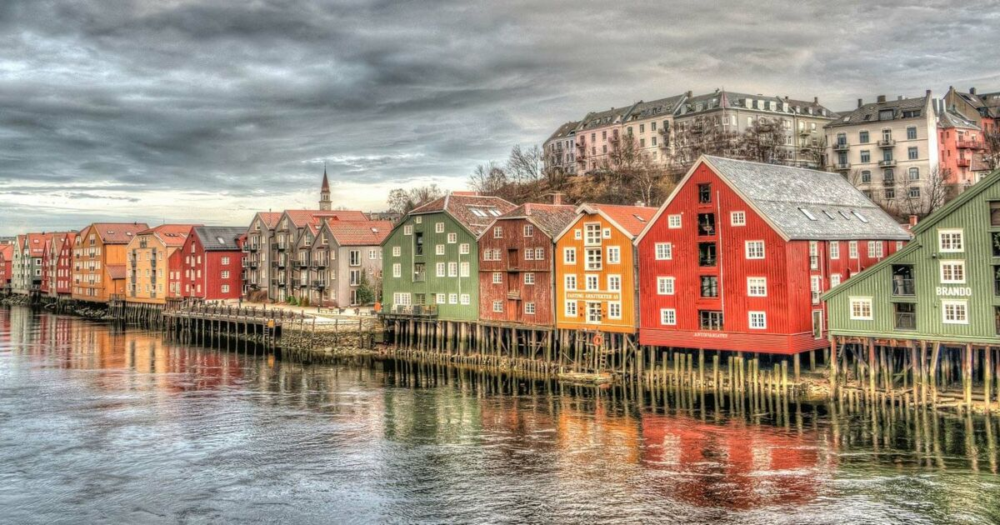
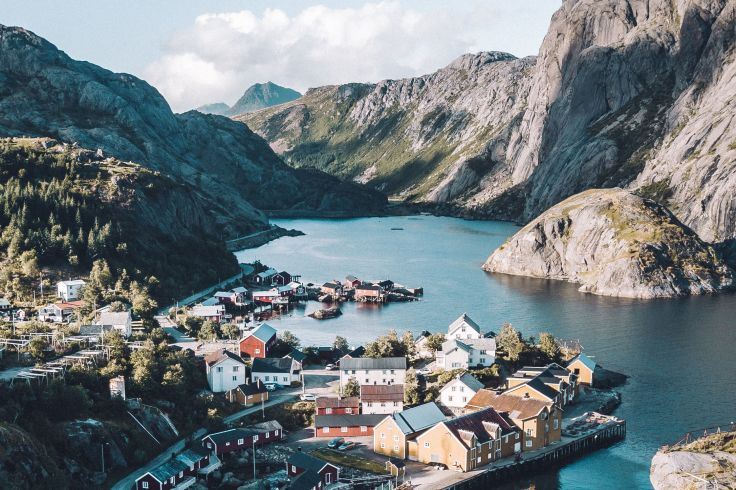
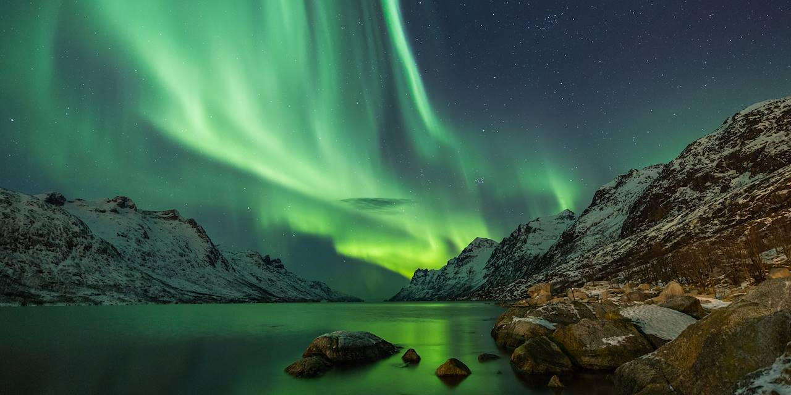
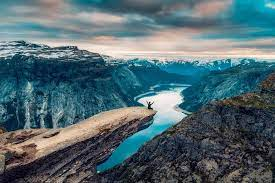

La Norvège, située dans le nord de l'Europe, est un pays à la beauté naturelle exceptionnelle. Célèbre pour ses fjords majestueux, ses montagnes escarpées et ses aurores boréales envoûtantes, elle est une destination de rêve pour les amateurs de plein air. La Norvège est également reconnue pour sa qualité de vie élevée, avec un système de santé et d'éducation exemplaire. Sa capitale, Oslo, est une ville dynamique qui mêle une architecture moderne à des quartiers historiques pittoresques. Le pays possède une économie prospère, principalement grâce à ses ressources naturelles, en particulier le pétrole et le gaz. La culture norvégienne est imprégnée de traditions viking, de folklore et de littérature, avec des auteurs tels qu'Henrik Ibsen et des artistes comme Edvard Munch. Les Norvégiens sont également réputés pour leur engagement envers la durabilité environnementale, faisant de la Norvège un leader mondial dans la lutte contre le changement climatique. En somme, la Norvège est un pays qui allie nature époustouflante, qualité de vie exceptionnelle et un fort engagement envers un avenir durable.
La Norvège offre une variété incroyable de paysages époustouflants, allant des majestueux fjords ciselés par d'anciens glaciers aux vastes étendues de forêts boréales, en passant par les pics imposants des montagnes de la chaîne des Alpes scandinaves. Les fjords norvégiens, tels que le Geirangerfjord et le Nærøyfjord, sont parmi les plus beaux au monde, avec leurs parois rocheuses vertigineuses qui plongent dans des eaux d'un bleu profond. Les montagnes norvégiennes, quant à elles, offrent d'innombrables possibilités d'exploration, de l'escalade des sommets enneigés au ski en hiver. Les forêts boréales, ponctuées de lacs miroitants, abritent une faune variée, notamment des élans, des rennes et des ours, créant ainsi des paysages de conte de fées.
En outre, la Norvège est réputée pour ses phénomènes naturels uniques, comme les aurores boréales qui illuminent le ciel arctique de couleurs vibrantes en hiver, ainsi que le soleil de minuit qui baigne les terres du Nord dans une lumière dorée pendant les nuits d'été. L'ensemble de ces paysages norvégiens offre aux voyageurs et aux amateurs de plein air une expérience inoubliable au cœur de la nature sauvage et préservée de la Scandinavie.
   La gastronomie norvégienne est fortement imprégnée de ses ressources naturelles, mettant en avant les délices de la mer tels que le saumon, les crevettes et les moules. Les plats traditionnels comme le lutefisk, la morue séchée, ainsi que le rakfisk, le poisson fermenté, reflètent les racines historiques de la cuisine norvégienne. Les baies sauvages, comme les myrtilles et les airelles, sont fréquemment utilisées dans les desserts et confitures. La cuisine norvégienne privilégie la fraîcheur des ingrédients et les saveurs authentiques, offrant une expérience culinaire unique pour ceux qui souhaitent explorer la richesse de la culture gastronomique du pays.
Le Lutefisk
Le rakfisk